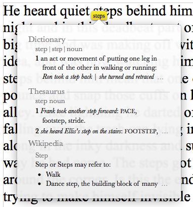

Apache OpenOffice Community : AOO 4.1.1 Release Notes
Translations: Deutsch (de) - Hungarian (hu) - Italian (it) - Nederlands (nl) - Español (es) - Russian (ru)
General Remarks
Apache OpenOffice 4.1.1 is a micro release intended to fix critical issues. All users of Apache OpenOffice 4.1.0 or earlier are advised to upgrade. You can download Apache OpenOffice 4.1.1 here.
Please review these Release Notes to learn what is new in this version as well as important remarks concerning known issues and their workarounds.
Our Bugzilla issue tracking database provides a detailed list of solved issues.
Improvements/Enhancements
The lookup gesture feature of Mac OSX has been fixed.

Bug Fixes
Additional Language Support
New translations available in Apache OpenOffice 4.1.1 include:
Catalan (ca) | Catalan (Valencian RACV) ca-XR) | Catalan (Valencian AVL) (ca-XV) |
Updated translations available in Apache OpenOffice 4.1.1 include:
German (de) | Hebrew (he) | Khmer (kh) |
| Lithuanian (lt) | Polish (pl) | Portuguese (European) (pt-PT) |
Traditional Chinese (zh-tw) | Thai (th) | Vietnamese (vi) |
New and Updated Dictionaries
New Dictionaries
Catalan (ca) | Catalan (Valencian RACV) ca-XR) | Catalan (Valencian AVL) (ca-XV) |
Updated Dictionaries
| English (en) see note | French (fr) | Portuguese (European) (pt-PT) |
| Russian (ru) | Slovenian (sl) |
Note: The English (en) dictionary contains multiple variants. Only the en-GB dictionary has been updated.
Additional Platform Support
For Apache OpenOffice 4.1.1 we have made additional functional verification tests on Windows 2012 server and this platform is now officially approved and supported by the AOO project. It is supported on the same level as AOO 3.4.1 on Windows 2003 server.
Known Issues
- Apache OpenOffice 4.1.1 will be flagged by the new Gatekeeper facility in Mac OS X Mountain Lion and Maverick. This is a new feature to help guard against malware on Mac systems. There is a procedure laid out at the following link to allow applications not installed from the Mac App store to run. See the Mac support article.
- Apache OpenOffice 4.1.1 supports Java 7, which is the recommended configuration; but (especially on 64-bit Windows) you might receive warnings about the Java version being defective. In that case, download and install the Microsoft Visual C++ 2010 Redistributable Package. If you still have problems, install the most current JRE 6 version. Make sure you get the file "Windows x86 Offline (32-bit)". Then configure OpenOffice to use is at "Tools - Options - OpenOffice - Java". See this forum topic for more information.
- For the MacOSX version only, any extensions that are written in C++ for AOO 4.0 (or earlier) will no longer work and be marked as disabled in the AOO extensions manager. This is because of the change of AOO from a 32-bit to a 64-bit application on MacOSX. Please report the problem to the developer of the extension.
- Dictionaries for Spell Check are temporarily only included in complete localized Installers and not in Language packs (Issue 124423). They can be installed as extensions using Tools->Extension Manager.
- In rare cases, installation on Windows can fail with this error message: "Key not valid for use in specified state". A workaround is to temporarily uninstall the Windows update KB 2918614 and reinstall it after OpenOffice has been installed. See issue 125446 for further details.
Installation Information
Installation instructions can be found at: http://www.openoffice.org/download/common/instructions.html
Stay informed about Apache OpenOffice
You are encouraged to subscribe to the Apache OpenOffice announcement mailing list to receive important notifications such as product updates and security patches. To subscribe you can send an email to: announce-subscribe@openoffice.apache.org.
You can also follow the project on Twitter, Facebook and Google+.
{kind=link}
{kind=link}